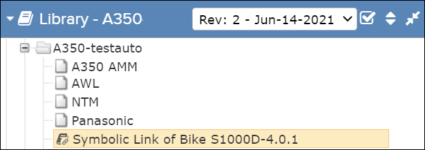

The ability to create a symbolic link to a publication is available in Data Manager.
This feature allows you to create a symbolic link to publications in a different library.
Refer to the section "Creating a Symbolic Link" in the topic "Publication Panel " in
the Flatirons Data Manager User Guide.
When you select the publication, the Table of Content appears for the original (target) publication. Metadata for the symbolic link publication, such as revision number, release status, release date, etc., are also for the original publication. Like other publications, you can open a symbolic link publication from various places in Pinpoint. You can also perform searches on the publication.
Note: You can create a symbolic link in Pinpoint
Standalone only if the Data Manager component is available in your environment. This is not
applicable for Pinpoint Standalone Light.
Note: To successfully download the symbolic
link publication through the auto sync / manual sync process in a standalone package, you
must first download the target publication (source) linked to it.
After the
symbolic link is created, the linked publication is available in Pinpoint. The  symbolic link icon to the left of the publication name identifies
it as a symbolic link publication. For example:
symbolic link icon to the left of the publication name identifies
it as a symbolic link publication. For example:

When you select the publication, the Table of Content appears for the original (target) publication. Metadata for the symbolic link publication, such as revision number, release status, release date, etc., are also for the original publication. Like other publications, you can open a symbolic link publication from various places in Pinpoint. You can also perform searches on the publication.
Opening a Symbolic Link Publication
You can open a symbolic link publication by selecting the publication or a link to the
publication. The publication that displays is always the original publication. You can open
the symbolic link publication from:
- Table of Content
- Document Reference
- GOTO URL
- Bookmark
- History
- Full Text Search
- Attachment Search
- Annotation Search
Searching on a Symbolic Link Publication
You can perform a Full Text Search, an Annotation Search, and an Attachment Search on
symbolic link publications. The search is performed against the data of the original
publication.
- Full Text Search: Refer to Perform a Full Text Search.
- Attachment Search: Refer to Search Attachments.
- Annotation Search: Refer to Search Annotations.
Restrictions for Symbolic Link Publications
You cannot perform the actions listed below on symbolic link publications. You can perform
these actions on the original publication, and the effect is visible in both the original
publication and the symbolic link publications.
- Release/rollback
- Add annotations
- Add attachments
- Author content
- Configure a landing page